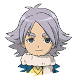
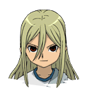
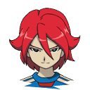

Un jugador de fútbol es una persona que practica y compite en el deporte del fútbol, también conocido como fútbol asociación o soccer en algunos países. Este deporte es un juego de equipo que se juega entre dos equipos de once jugadores cada uno en un campo rectangular con una portería en cada extremo. El objetivo del juego es marcar más goles que el equipo contrario, introduciendo el balón en la portería del adversario.
Además de las habilidades técnicas y físicas necesarias para jugar al fútbol, los jugadores también deben tener una buena comprensión táctica del juego, capacidad de trabajo en equipo, disciplina, y una excelente condición física. Los jugadores de fútbol pueden participar en ligas locales, nacionales e internacionales, y pueden jugar para equipos de clubes o selecciones nacionales.
Los jugadores tienen distintas posiciones, estas son:
Y los jugadores tienen distintos elementos:
| Portero de montaña | Defensa de aire | Centrocampista de bosque | Delantero de fuego |
|---|---|---|---|
|  |  |  |